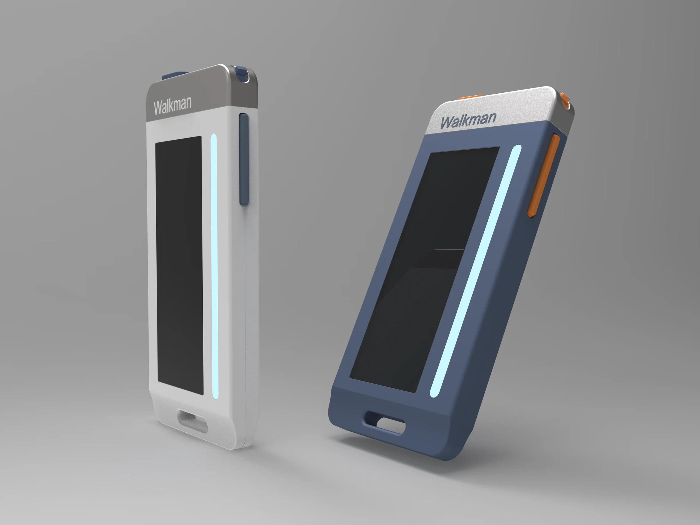
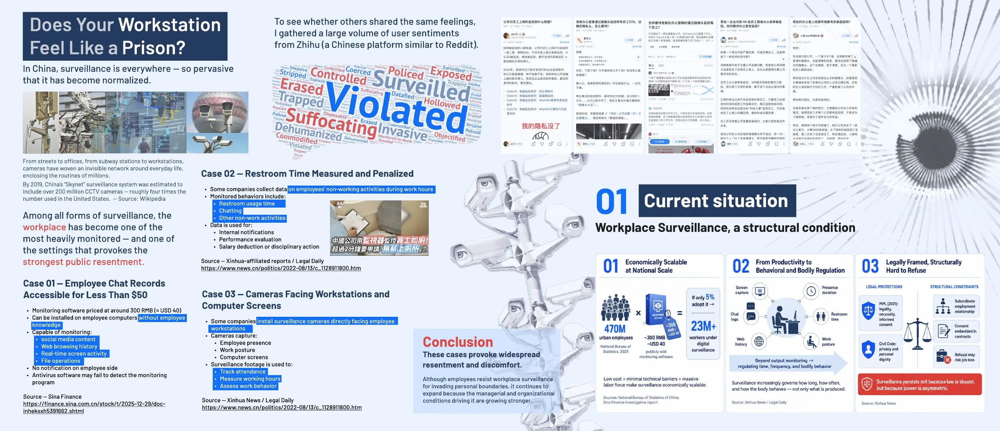
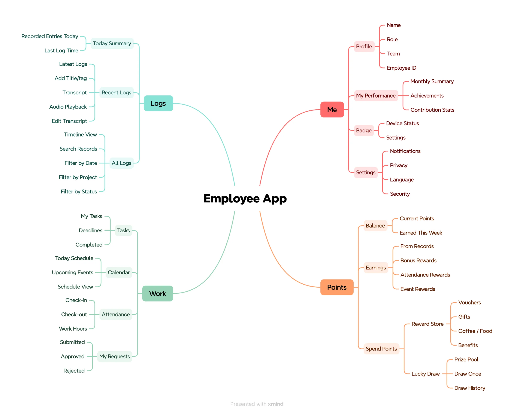
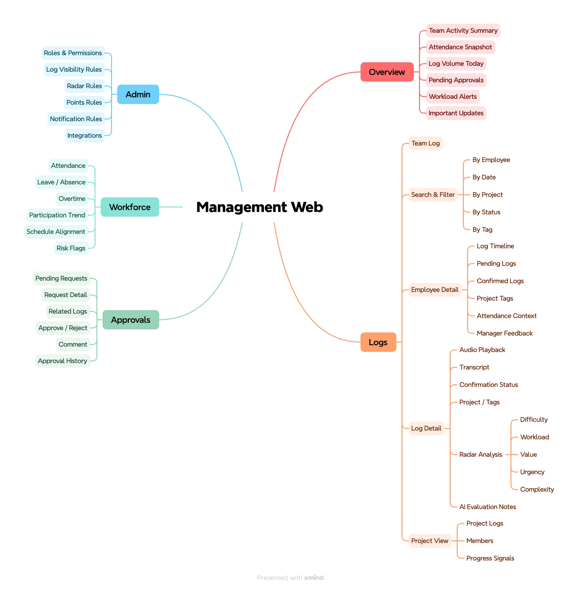
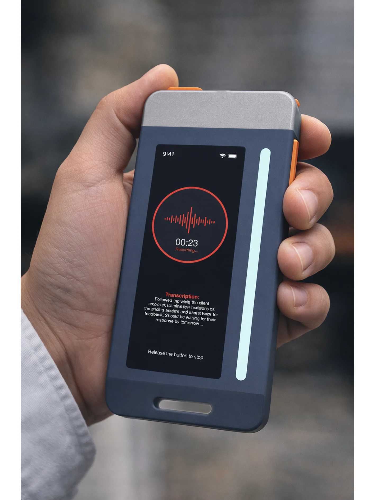
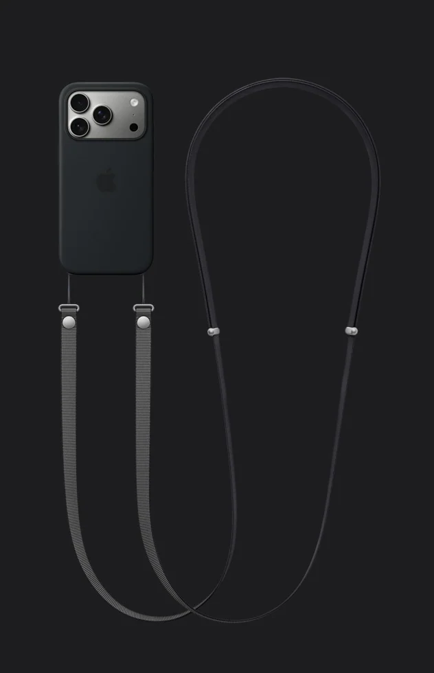
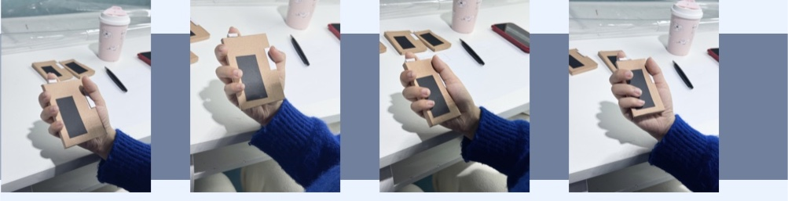
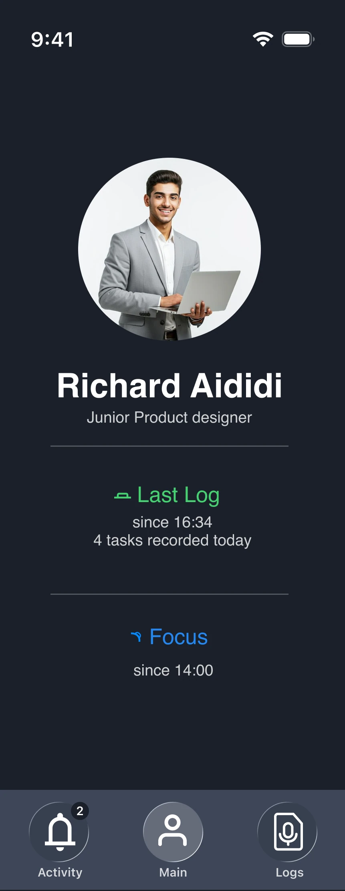

MLOG
My Work, My Log — a wearable badge, an employee app and a manager dashboard that turn workplace monitoring into records the employee chooses to make.

Does your workstation feel like a prison?
In China, surveillance is so pervasive it has become normal. Among all its forms, the workplace is one of the most heavily monitored — and the setting that provokes the strongest public resentment.
Three reported cases
Chat records for less than $50
Software installed without notice captures social media, browsing history, live screens and file operations — and antivirus tools may fail to detect it.
Restroom time measured and penalised
Non-working activities — restroom use, chatting — feed into internal notices, performance reviews and salary deductions.
Cameras facing every screen
Cameras pointed at workstations record presence, posture and screens, then measure hours and assess behaviour.
To check whether others shared the same feeling, I gathered a large volume of posts from Zhihu. The words people used were violated, suffocating, trapped, policed, dehumanised. Yet opposition has not slowed adoption: the conditions that produce surveillance keep getting stronger.

Surveillance is discipline, not observation.
Rather than blame the employer, I treated the problem like a courtroom and heard the defendant: why does monitoring exist, and why can’t it simply be removed?
“Visibility is a trap.”Michel Foucault — people who might be watched start watching themselves
Unequal power
Survival is not negotiable. Workers can leave in theory, rarely in practice — so “refusal” exists only on paper.
Management needs certainty
Uncertainty is a cost and prediction has economic value. Managers will not give up visibility.
Data always enters decisions
Once recorded, data is used for ranking and selection. When survival depends on evaluation, evaluation demands data.
This is a structural binding between dependency and measurement — no single policy, system or company can undo it. So the question changes from how do we remove monitoring to how could monitoring be experienced differently?
Three perspectives, 142 voices.
Semi-structured, anonymised interviews with people from different companies and levels of power, followed by a questionnaire of 142 respondents (mostly aged 31–40, mainly from the creative industries).
| Perspective | Why they monitor | What they really fear | Research insight |
|---|---|---|---|
| HR | Progress management, risk warning and accountability — “who did what, when, and where it went wrong”. | Subjective, untraceable performance decisions. | Surveillance is normalised through managerial language: efficiency, not control. |
| Middle managers | Working-hour, online-status and activity logs are “upward self-protection” when a project slips. | Being blamed for “losing control” with no process data to show. | They operationalise surveillance in daily work while balancing staff relations. |
| Company owners | Governance, audit and legal self-protection: “unprovable management equals negligent management”. | Organisational blind spots — problems nobody notices or dares to report. | Monitoring is framed as a structural necessity; they want fewer but truer data. |
What makes people feel “watched” at work?
When would you accept being recorded?
Academic grounding
Performance for the system
Continuous monitoring distorts work: people do what is visible, avoid risky tasks and game metrics.
Opacity breaks trust
“Not knowing what is recorded is scarier than being recorded.” Uncertainty breeds anxiety and resistance.
Agency restores acceptance
Self-determination theory (Deci & Ryan) and reactance theory (Brehm): autonomous, voluntary actions are accepted and sustained.
The problem is not recording. It is how recording happens.
People resist monitoring that is continuous, opaque and punitive — not monitoring itself. Acceptance rises when they can trigger it, see it and get something back.
Five design directions
Minimise collection
Record whether a task is done, not the whole behavioural trace.
Reduce felt intensity
Recording starts only when the employee triggers it.
Voluntary submission
Employees describe what they just did, in their own words.
Reciprocity
Every submission gets a confirmation, feedback or reward.
Visible to the employee
People can always review what they have uploaded today.
Directions I chose not to pursue
Remove leadership
Flattening organisations is an institutional change beyond design.
Eliminate surveillance
Denies the structure instead of working within it — no company would adopt it.
Let employees opt out
“Choice” is formal in employment and turns structural pressure into personal blame.
A culture of trust
Trust can’t be institutionalised; when culture fails, monitoring returns.
One record, three touchpoints.
MLOG does not eliminate monitoring. It redesigns how monitoring is experienced, initiated and interpreted: employee-initiated, transparently visible and reciprocal.
Smart badge
Quick voice logging, identity and access, minimal feedback. Each submission gets an immediate response.
Mobile app
Review and edit transcripts, see your history, earn points and spend them in the store or lucky draw.
Management web
Only confirmed records arrive: team overview, log search, approvals and AI-assisted evaluation.
Data flow: employee → badge voice log → app confirmation → cloud processing → AI task evaluation → manager dashboard → points back to the employee. Points have a base layer for every valid record and a dynamic layer weighted by task difficulty; they convert into allowances, store items or a performance factor.


Why a badge? Why a Walkman?
A badge is already worn every day and accepted at work, so it adds no new habit. Putting it on marks the start of the working day.
Form reference
I compared workplace badges, Nintendo Mini Classics, Braun radios and the iPod, and chose the Walkman. It is a recognisable cultural object whose buttons created a clear behaviour loop — press play, sound starts; press stop, it ends. It could also record.
The design relies on mental-model transfer: the familiar “press to record” gesture moves into a work context, lowering learning cost and making the action feel deliberate.
Ritualised interaction
Wear the badge
The transition from off-duty to on-duty.
Press
A deliberate starting point for a record.
Speak
Capture the moment in your own voice.
Complete
A clear ending that invites reflection.


Device composition · approx. ¥50–90 core hardware per unit
| Part | Purpose | Spec | Cost |
|---|---|---|---|
| Chip | Audio capture, processing, Bluetooth | Low-power MCU with BLE 5.0 | ¥15–25 |
| Screen | Recording status, points, battery | 3×6 cm OLED | ¥8–15 |
| Microphone | Voice recording | Digital MEMS, I2S/PDM | ¥3–6 |
| NFC | Identity and access control | ISO14443 controller + coil | ¥6–12 |
| Battery | Full-day use | 500–800 mAh Li-ion, USB-C | ¥10–18 |
| Speaker | Short voice cues | Compact micro speaker | ¥4–8 |
| Vibration motor | Silent confirmation | Single / double patterns | ¥3–6 |
Four paper badges in one hand.
Four cardboard prototypes (A–D) kept the same aspect ratio and changed only overall size, with a simulated side button, to test one-handed holding and pressing.
Average raw score
Because people use rating scales differently, I applied within-participant range normalisation before ranking. Smaller, more compact models performed better. The final form uses D’s size, keeps C’s compactness and grip, and the next iteration reduces protrusions, enlarges the thumb-contact area and rebalances screen size and width.

Try it: follow one work record.
Every screen below is clickable. Start with the full loop across all three devices, then explore each touchpoint on its own.
Badge → Phone → Manager



Glanceable feedback on 3×6 cm
From wireframe to hi-fi
Team visibility from confirmed records only
User journey
Start work
Wearing the badge begins the workday.
Work event
The employee decides if a moment is worth recording.
Initiate
Recording is intentional, never passive.
Review
Edit the transcript, choose what is shared.
Feedback
Points and recognition make documentation positive.
Manager review
Visibility into progress without private data.
Original boards
The full presentation boards, page by page. Click any board to open it, then click again to zoom in and move the mouse to pan.